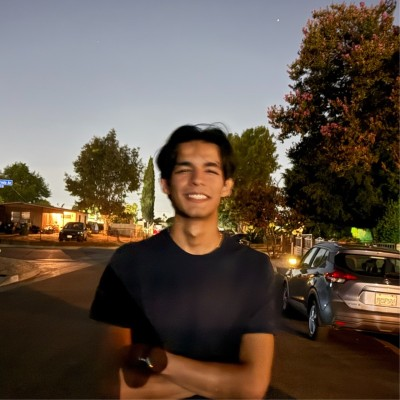

|
Parsa Ghasemi
I am a Computer Engineering student at Cal Poly Pomona
(BS, expected May 2027, GPA 3.5) and Vice President of the
Autonomous Vehicle Laboratory,
a Department of Education-funded graduate research lab with 50+ members.
I direct 15 researchers across 4 teams and administer an $84,000+ annual research grant.
I founded the Legged Robotics Lab, a 501(c)(3) nonprofit
at Cal Poly Pomona with 30+ members and $10K+ in funding.
Email /
CV /
LinkedIn /
GitHub
|

|
Publications
My research focuses on autonomous vehicle systems, real-time embedded control,
sensor fusion, perception, reinforcement learning, imitation learning,
and safety-critical robotics. Some entries are highlighted.
|
|
|
A Full-Scale Autonomous Vehicle Platform for Engineering Education
Parsa Ghasemi,
Behnam Bahr,
Viviane Seyranian
ASEE Zone IV Conference, 2026
project
Presents a full-scale autonomous vehicle platform built for $12K-15K (vs. $200K+ commercial alternatives), where ~30 undergraduates designed every layer from embedded firmware to planning algorithms. Measures self-efficacy gains in systems integration, hardware debugging, and safety-critical development.
|
|
|
Simplified Multimodal Imitation Learning for Day-Night Autonomous Driving
Aspen Knox,
Parsa Ghasemi
SCAIR, 2025
paper
/
project
Multimodal imitation learning pipeline fusing RGB, thermal, and CAN telemetry for day-to-night autonomous driving with only 3 manual interventions on a 0.3-mile route.
|
|
|
Defense-in-Depth Security Architecture for CAN-Based AV Control Systems
Parsa Ghasemi
SCCUR, 2025 — Oral Presentation, 500+ attendees
project
Defense-in-depth security architecture for CAN bus networks in autonomous vehicles, addressing message authentication, anomaly detection, and fail-safe isolation.
|
|
|
End-to-End Autonomous Vehicle Research Platform
Full-stack autonomous vehicle platform built for $12K-15K vs. $200K+ commercial alternatives, with 19,000+ LOC across 4 repositories.
Perception: Velodyne VLP-16 LiDAR, Intel RealSense D435i stereo, Xsens MTi-680G INS with centimeter-level RTK positioning.
Planning: ROS 2 Nav2 with SmacPlannerHybrid, OSMnx graph routing, probabilistic occupancy grid mapping.
Control: 4 Teensy 4.1 MCUs networked over CAN bus at 250 kbps, 20 Hz control loop, 4,900+ LOC C++ embedded firmware.
Teleoperation: Simchair + phone WebUI + WebRTC video streaming + on-device Whisper voice control.
Safety: 4-layer E-STOP architecture, 500 ms hardware watchdog, zero incidents over 50+ hours of autonomous operation.
Hardware: Custom KiCad PCB with SN65HVD230 CAN transceivers, TXB0104D level shifters, and Traco DC-DC converters.
AVROS /
av-control-system /
AVCONSOLE /
AVPCB /
paper (ASEE 2026)
|
|
|
Multimodal Imitation Learning for Illumination-Robust Autonomous Driving
Collected 50,000+ synchronized frames (RGB 30 Hz + Thermal 30 Hz + CAN 20 Hz) and trained an imitation learning model that generalizes from day to night driving with only 3 manual interventions on a 0.3-mile route.
paper (SCAIR 2025)
|
|
|
CARLA Gymnasium Environment for Autonomous Driving RL
Parsa Ghasemi,
Alexander Assal
7-manager Gymnasium-compatible environment for training RL agents in CARLA, achieving 100 steps/sec throughput with <10 ms latency and zero memory leaks over 10,000 episodes. Compatible with PPO, SAC, and TD3.
GitHub
|
|
|
Legged Robotics Lab — 501(c)(3) Nonprofit & K-Bot Arm Control
Founded a 501(c)(3) nonprofit at Cal Poly Pomona with 30+ members and $10K+ in funding. Building a ros2_control hardware interface for a 5-DOF Robstride actuator arm using the MIT mini-cheetah CAN motor protocol.
GitHub
|
|
{kind=link}